Radical Autoxidation
One of the most important destructive reactions for materials, foods, and also for living systems is called autoxidation; that is, oxidation requiring oxygen and no other reactant. This reaction takes place by a radical chain mechanism very similar to that for allylic bromination. If you open a bottle of cooking oil that has stood for a long time, you will notice the hiss of air entering the bottle because there is a negative pressure caused by the consumption of oxygen by autoxidation of the oil. The rancid butter smell is due to autoxidation, the chemical process that converts R−H groups to R−O−O−H group, called a hydroperoxyde. The process occurs by initial abstraction of hydrogen, usually by molecular oxygen, which is itself a diradical
R−H + O2 ⟶ R⋅ (carbon radical) + H−O−O⋅
The carbon radical formed reacts with additional oxygen to form a peroxy radical (R−O−O⋅),
R⋅ + O2 ⟶ (carbon radical) + R−O−O⋅ (Peroxy radical)
The peroxy radical then removes a hydrogen from another substrate, forming a hydroperoxide (ROOH) and another carbon radical.
R−H + R−O−O⋅ ⟶ R⋅ + R−O−O−H (hydroperoxide)
Hydroperoxide degrade and rearrange to other compounds, including carbonyl compounds and carboxylic acids. Autoxidation occurs readily in the many foods that contain polyunsaturated fats, such as margarine, butter and food oils (e.g. corn and olive oil). The body contains many polyunsaturated fats, and it also has a means of protecting itself against autoxidation of those fats. (Remember that oxygen is transported throghout the body; also, some enzymatic reactions proceed via radical mechanism, providing another source of radicals). The essential Vitamin E, also known as α-tocopherol, is an antioxidant, a radical inhibitor whose role is to prevent deterioration of body fats by autoxidation.
Cooking oil contains polyunsaturated fatty acid esters. So there is at least a double bound in the hydrocarbon chain, which means that there is always at least one allylic position prone to give up a hydrogen atom forming a stable allylic radical. With time, oxygen removes an allylic hydrogen to form an allylic radical, which in turn produces hydroperoxydes and related products. The hydrogens on the CH2 group between the double bonds are doubly allylic; that is, they are allylic with respect to both double bonds. As you might expect, the radical formed by abstraction of one of these hydrogens is unusually stable because it is even more delocalized (described by resonance contributing structures) than an allylic radical. An allylic C−H bond is much weaker than a corresponding alkane C−H bond, and the doubly allylic C−H is even weaker.
It is the taste nad odor of these compounds, especially the carboxylic acids, tha are associated with the spoilage (rancidity) of such foods.
A well-known example of autoxidation occurs with the faccy acid linoleic acid. Linoleic acid has two double bonds (at C 9 and C 12), making the methylene group at carbon 11 doubly allylic and very susceptible to autoxidation.
Because vitamin E is removed in the processing of many food products, similar phenols such as BHT, Butylated hydroxytoluene and BHA Butylated hydroxyanisole (Problem 22.23) are often added to foods to prevent spoilage by autoxidation. The BHT radical is unreactive because of the steric hindrance provided by the adjacent tert-butyl groups. Formation of the BHT radical on the phenolic O atom therefore stops the autoxidation chain propagation analogous to vitamin E. These compounds are all called radical inhibitors because of their ability to terminate radical chains before significant damage to the food occurs. Radical inhibitors are often referred to as preservatives. Similar compounds are also added to many materials, such as plastics and rubber, to protect them against autoxidation.
Similar oxidative degradation of materials in low-density lipoproteins (LDL, Section 26.4A) deposited in arteriosclerotic plaques on the walls of arteries leads to cardiovascular disease in humans. Many effects of aging and possibly cancer in humans and damage to materials such as rubber and plastic occur by similar mechanisms.
Similar compounds are added to other materials, such as plastic and rubber, to protect them agains autoxidation. The protective properties of phenols may explain why the health benefits of foods such as green tea, wine, and blueberries (each of which contains large amounts of phenolic compounds) have been lauded by nutritionists and other in the medical community.
Butylated hydroxy-anisole